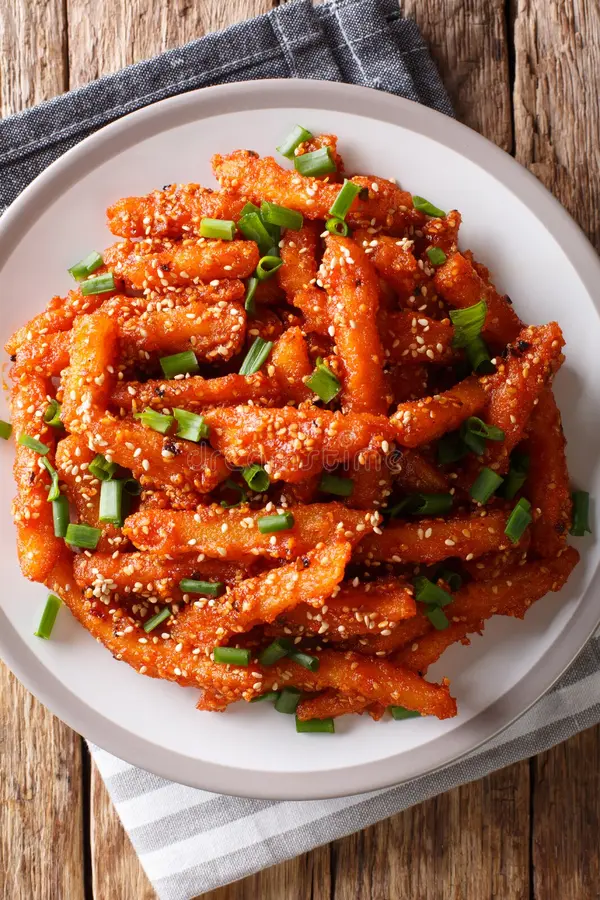

Home
Honey Chilli Potato

This is one of the most ordered dishes at any Pan Asian restaurant! I always speak about contrast and getting flavour balance right. Honey Chili Potato is a perfect example of flavour contrast. Here's my recipe for restaurant style Honey chilli Potato. Do try it :)
Ingredients
For boiling
- Water
- Salt to taste
- 4 large potatoes(Peeled, cut into thick batons)
- one teaspoon vinegar
For coating
Other ingredients
For tempering
- One and a half teaspoon oil
- Four dry kashmiri red chilli
- One tablespoon ginger and garlic both, not each.(Finely chopped)
- Two teaspoon schezwan sauce
- One and a half tablespoon tomato ketchep
- One-fourth teaspoon soy sauce
- Salt to taste
- Fried potatoes
- One and a half teaspoon honey
For garnish
- Toasted sesame seeds
- Spring onion(chopped)
Procedure
For boiling
- In a kadai, add water, salt to taste, and potatoes and boil.
- Once the potatoes are half done, turn off the flame and strain the potatoes, transfer into a bowl.
- Keep it aside for further use.
For coating
- Into the same prepared boiled potato bowl, add cornstarch, salt to taste and coat well.
- Keep it aside for further use.
For frying
- In kadai, add oil, once hot, add potatoes and fry.
- Once potatoes are half done, transfer into a plate and keep aside.
- Keep the kadai on high flame, once oil is heated, add prepared fried potatoes into it and fry until crisp and golden in color.
- Transfer it onto a plate and keep it aside for further use.
For tempering
- In a woak, add oil once hot, add ginger and dry red chillies and saute them for 10-12 seconds on high flame.
- Once red chillies turn crispy, then add schezwan sauce, tomato ketchup, soy sauce, salt to taste and saute for 10-12 seconds.
- Add prepared fried potatoes and toss everything well.
- Now, add honey and mix well.
- Serve on a serving plate and garnish with toasted sesame seeds, spring onion.
- Serve hot.